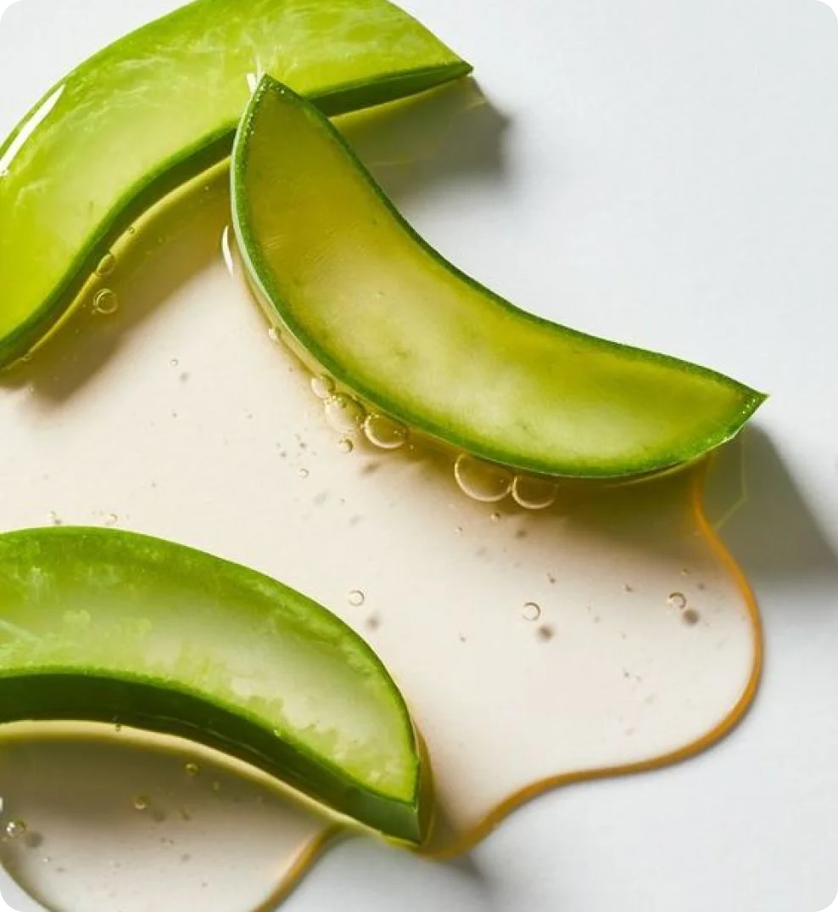

26 марта 2024
вещества
Алоэ вера, или алоэ, уже давно известен своими благотворными свойствами для кожи. Этот растение содержит множество полезных веществ, таких как витамины, минералы, аминокислоты и ферменты, которые способствуют улучшению состояния кожи. Давайте обсудим плюсы его действия на кожу.
Описание
Алоэ вера обладает противовоспалительными, увлажняющими, заживляющими и успокаивающими свойствами, что делает его идеальным компонентом для уходовой косметики. В частности, он обладает увлажняющими свойствами: экстракт алоэ может удерживать влагу в коже, помогая бороться с сухостью и обеспечивая необходимое увлажнение.
Кроме того, благодаря своим противовоспалительным свойствам, алоэ вера способствует заживлению раздражений, уменьшению покраснений и ускорению процесса регенерации кожи. Он хорошо питает и успокаивает даже самую чувствительную кожу.
Обозначение в составе
Алоэ вера может обозначаться в составе как Aloe Vera или Aloe Vera extract.

Где содержится
Алоэ вера — один из самых распространенных натуральных компонентов в уходовой косметике. Он содержится в разнообразных увлажняющих средствах, таких как кремы, тоники, маски, лосьоны и сыворотки. Кроме того, благодаря успокаивающим свойствам он часто применяется в средствах после загара, таких как гели и маски.
Помимо покупной уходовой косметики, алоэ вера часто можно встретить в рецептах домашних средств. Растение алоэ неприхотливо в уходе, поэтому можно использовать его для домашних масок и скрабов.
Применение
Алоэ вера - это отличный натуральный компонент для ухода за кожей, который подойдет практически всем типам кожи.
Алоэ вера отлично увлажняет кожу, поэтому обладателям сухого типа кожи подойдет увлажняющие кремы и сыворотки с этим компонентом.
Алоэ вера не добавляет коже излишней жирности, поэтому средства с ним можно использовать для ежедневного ухода.
Алоэ вера — идеальный компонент для чувствительной кожи, поскольку обладает сильным заживляющим и успокаивающим эффектом.